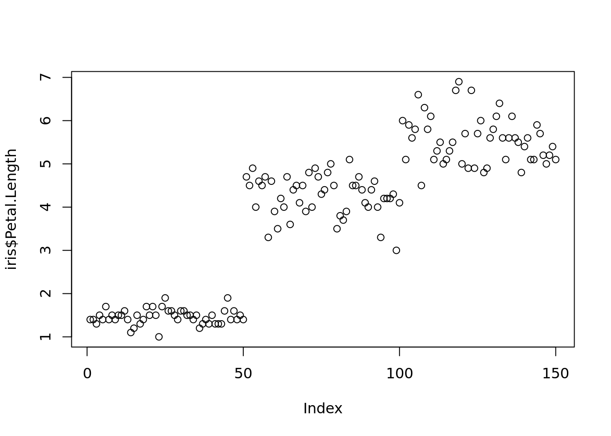
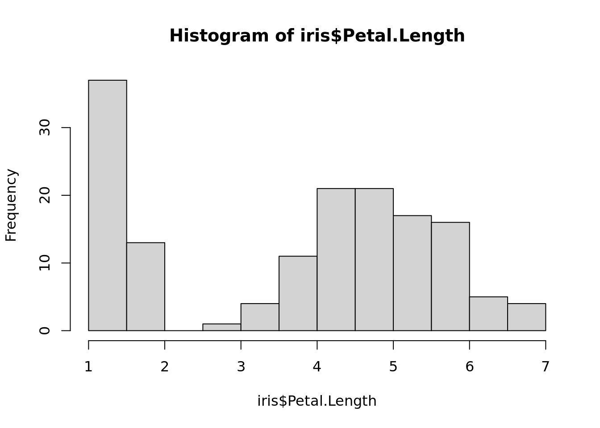
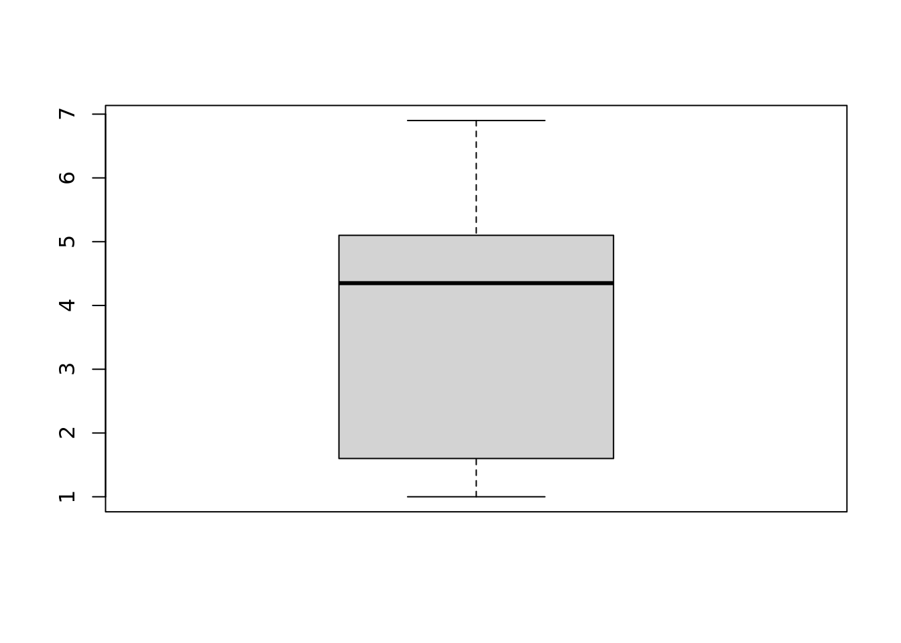
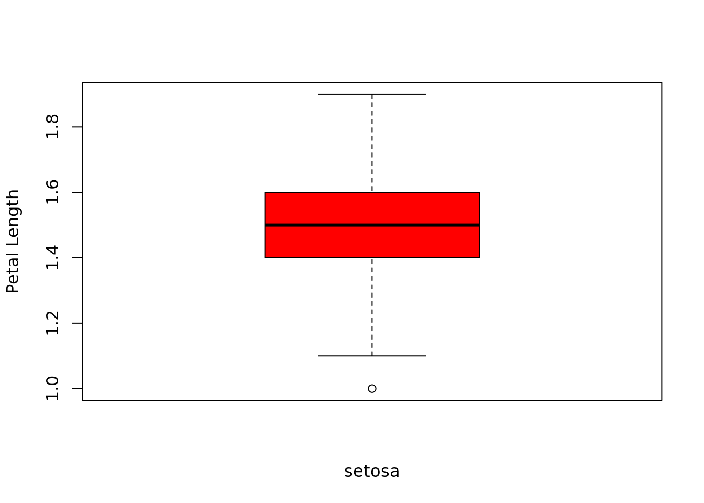
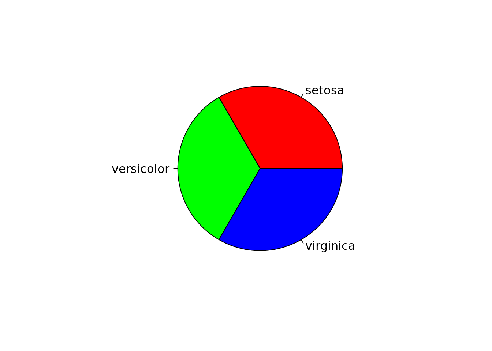
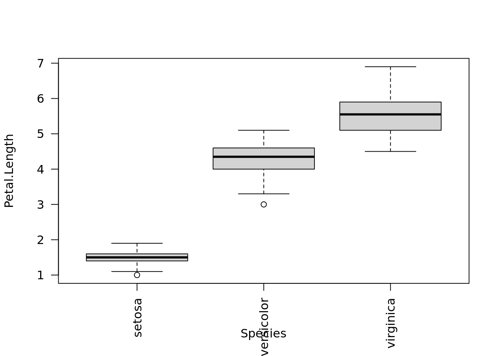
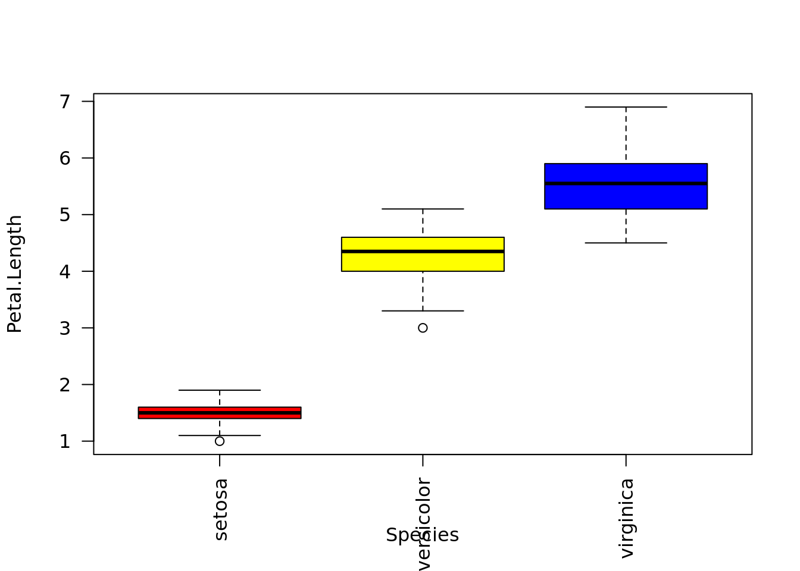
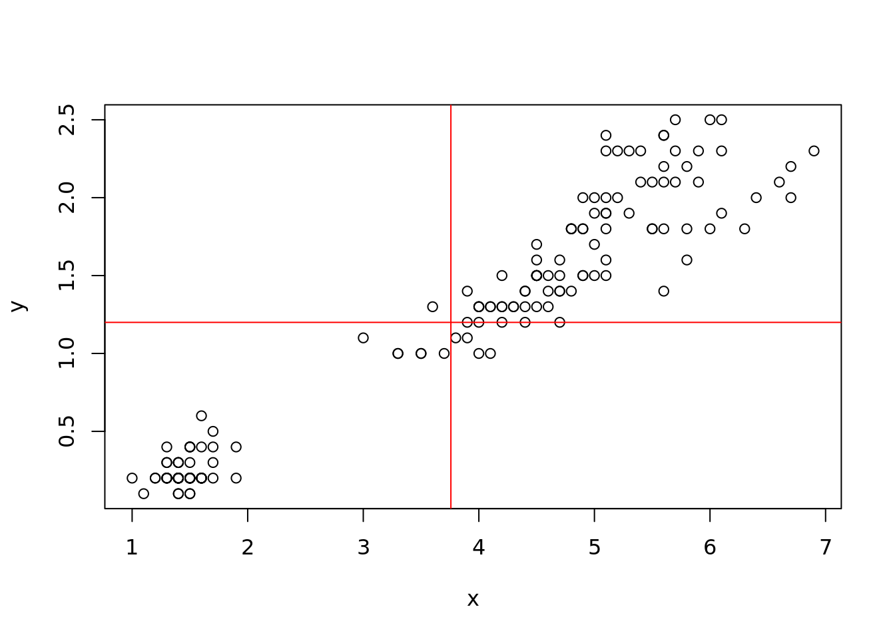
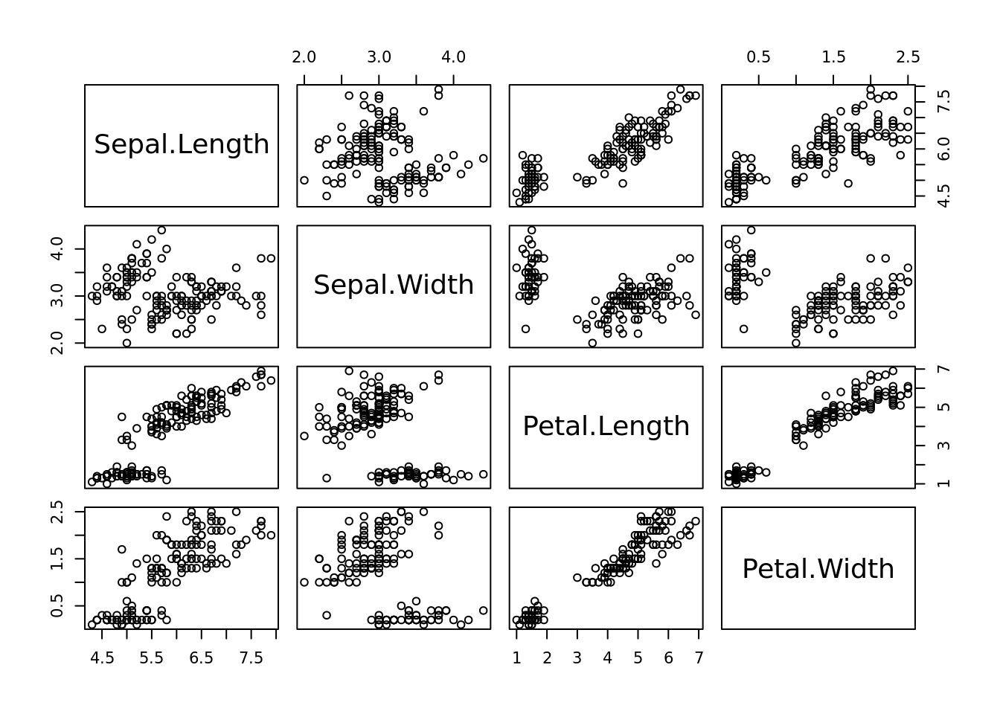
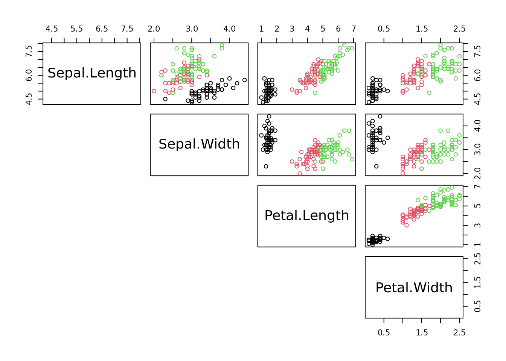

04: Data Descriptions and Visualizations
Thomas Manke
2023-03-15
R Markdown
R scripts (.R) help to define and run reproducible analysis workflows, but they lack documentation (other than comments).
R Markdown files (*.Rmd) combine scripts with powerful text formatting. They can be rendered (=“knit”) to produce html and pdf.
Task: In Rstudio,
- open a new R markdown document with
File > New File > R Markdown.... (This will open a template for an Rmd file that can be knit) - To convert this file into html press
Knit- try it out! You may have to save it first as - e.g. “first.Rmd” - There is a
YAMLheader that contains parameters which will affect the rendering process - customize them - The rest of the document are
text blocks(with simple format instructions) andcode blocks(with R code) - In R studio, the code blocks can also be run individually using the
embedded
Playbutton - try it out - Play time: Modify the yaml header, text blocks or code - or all of it. “knit” the documnt and observe changes.
Descriptive Statistics
summary(iris)## Sepal.Length Sepal.Width Petal.Length Petal.Width
## Min. :4.300 Min. :2.000 Min. :1.000 Min. :0.100
## 1st Qu.:5.100 1st Qu.:2.800 1st Qu.:1.600 1st Qu.:0.300
## Median :5.800 Median :3.000 Median :4.350 Median :1.300
## Mean :5.843 Mean :3.057 Mean :3.758 Mean :1.199
## 3rd Qu.:6.400 3rd Qu.:3.300 3rd Qu.:5.100 3rd Qu.:1.800
## Max. :7.900 Max. :4.400 Max. :6.900 Max. :2.500
## Species
## setosa :50
## versicolor:50
## virginica :50
##
##
## plot(iris$Petal.Length) # a plot at last. Simple, but many arguments: ?plot 
hist(iris$Petal.Length) # and a histogram
Task hist() can have many arguments. Use help to find out how the histogram can be customized (e.g. number of break points, title, colors). Try some of it.
Boxplot: a more condensed summary
boxplot(iris$Petal.Length)
Task: The boxplot above is for all data. Create a boxplot of petal length for species “setosa” only. 
Boxplot understands data frames
boxplot(iris) 
Query: What does the boxplot for Species mean?
Interlude: Factors = categorical variables
Factors denote a special class of R-objects that can be thought of as categories (here: species). They have a given number of levels which are internally represented as integers.
class(iris$Species)## [1] "factor"typeof(iris$Species)## [1] "integer"ts=table(iris$Species) # returns a contigency table ~> histogram for categorical data
barplot(ts, col=rainbow(3), ylab="observations", cex.names=0.9)
pie(ts,col=rainbow(3)) # if you really must
Boxplot understands factors in data frames
boxplot( Petal.Length ~ Species, data = iris, las=2) # what does las=2 do ?
Task: Use help to add three different colors: 
Correlations
If a data set has many numerical variables we often want to understand their correlations structure
x=iris$Petal.Length
y=iris$Petal.Width
plot(x,y) # again: this can be customized
abline(v=mean(x),h=mean(y),col="red") # add vertical/horizontal lines
cor(x,y) # a correlation coefficient: which one?## [1] 0.9628654All-Against-All Correlations
Task: remove the Species variable from “iris” and store the result in a new data.frame “niris”
## 'data.frame': 150 obs. of 4 variables:
## $ Sepal.Length: num 5.1 4.9 4.7 4.6 5 5.4 4.6 5 4.4 4.9 ...
## $ Sepal.Width : num 3.5 3 3.2 3.1 3.6 3.9 3.4 3.4 2.9 3.1 ...
## $ Petal.Length: num 1.4 1.4 1.3 1.5 1.4 1.7 1.4 1.5 1.4 1.5 ...
## $ Petal.Width : num 0.2 0.2 0.2 0.2 0.2 0.4 0.3 0.2 0.2 0.1 ...cor(niris) # correlation matrix. Which correlation coefficient?## Sepal.Length Sepal.Width Petal.Length Petal.Width
## Sepal.Length 1.0000000 -0.1175698 0.8717538 0.8179411
## Sepal.Width -0.1175698 1.0000000 -0.4284401 -0.3661259
## Petal.Length 0.8717538 -0.4284401 1.0000000 0.9628654
## Petal.Width 0.8179411 -0.3661259 0.9628654 1.0000000plot(niris) # provide a visualization for data frames, try also pairs(iris)
# assign species-colors to each observation
cols = iris$Species # understand how color is defined
plot(niris, col=cols, lower.panel=NULL) # "cols" was defined in task above
Review
- R markdown files extend scripts and can be converted to html/pdf
- summary for descriptive statistics
- simple plots with simple commands: plot(), hist(), …
- lots of parameters for customization: line width, colours, …
- correlation between variables: cor(), plot() - class specific behaviour
- Notice that the data used was extremely clean and structured: data()
Bioinfo Core @ MPI-IE Freiburg (2023)